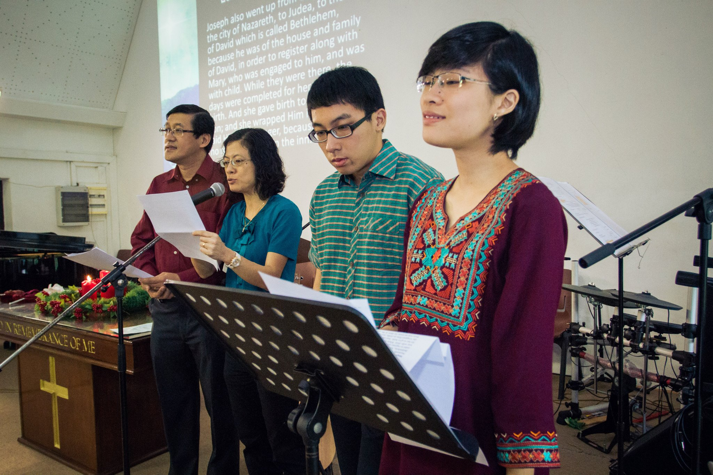

May Prayer Meeting
Church-wide prayer will happen on the first Saturday of May. Will you mobilise others to pray?
Church-wide prayer will happen on the first Saturday of May. Will you mobilise others to pray?

Come and pray with us to reach the young adults.
Church-wide prayer will happen on the first Saturday of May. Will you mobilise others to pray?
Baptism Service at East Coast
Church-wide prayer will happen on the first Saturday of May. Will you mobilise others to pray?
Church-wide prayer will happen on the first Saturday of May. Will you mobilise others to pray?
New to Shalom? Here's what to expect on Sundays. Also, find out how to get involved in our community.
We are an evangelical Christian community, that's been part of the Singapore Baptist Convention since 1975. People come regularly from all walks of life to worship God, learn the Bible and strengthen one another in fellowship.
Find out more.Latest Sermon
We learn to pray by praying! The ineffectiveness of our prayer can be attributed to three key reasons. First, we lack intimacy with God. Secondly, we treat prayer as supplement rather than fundamental to our lives. Third, we lack the sense of dependency on God.
Listen to this sermon Browse more sermonsWe meet in small groups regularly in members's homes, and gather in a larger setting for worship service every Sunday, at 11.30am (English) and 9.30am (Mandarin)